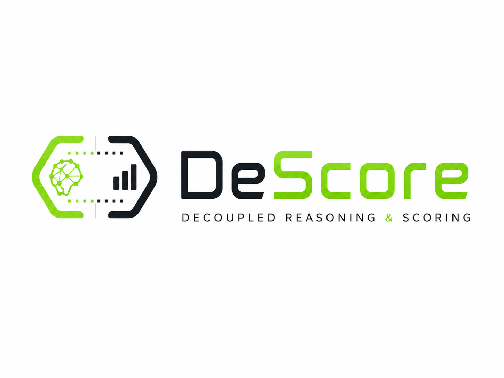
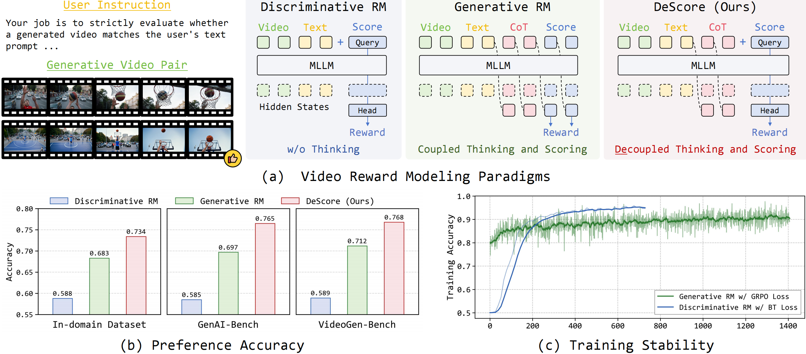
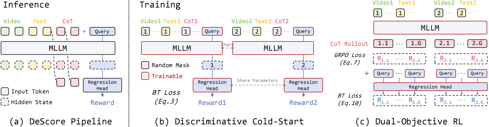
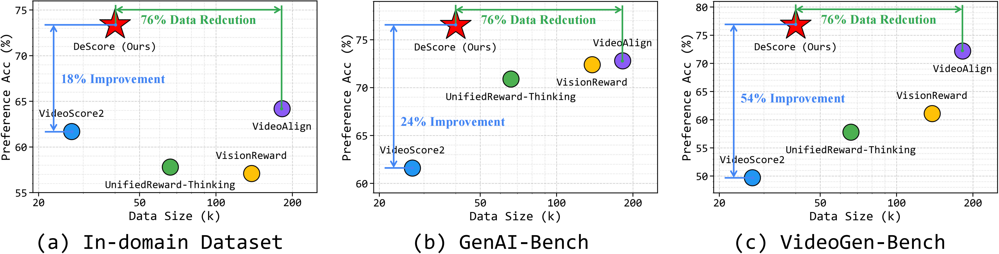
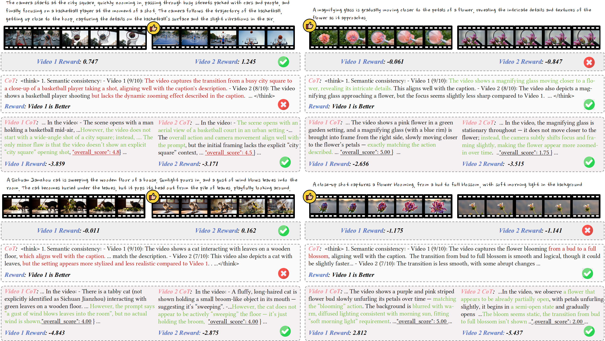

A training-efficient and generalizable video reward model that separates CoT reasoning from final reward prediction.
How can we harness the interpretability and generalization introduced by CoT reasoning during reward modeling while shielding the training process from the optimization instability of a coupled sampling chain?
Existing models follow two paradigms each with critical drawbacks. DeScore decouples CoT reasoning from scoring to get the best of both worlds.

An MLLM generates chain-of-thought reasoning, then a learnable query token's hidden state is projected to a scalar reward via a regression head — trained across two stages.

Fine-tunes the backbone and scoring module on pre-collected CoT data using Bradley-Terry (BT) loss. A random CoT masking strategy randomly drops the CoT during training, forcing the module to jointly leverage raw multimodal inputs and reasoning tokens — preventing over-reliance on either source and improving robustness.
Two independent objectives run simultaneously. GRPO loss refines CoT quality guided by rule-based rollout rewards. Auxiliary BT loss continuously calibrates the scalar reward head, ensuring CoT improvements translate directly to reward accuracy and preventing "reward drift."
DeScore is evaluated on one in-domain dataset (1,469 pairs) and two OOD benchmarks: GenAI-Bench (1.9k pairs from early T2V models) and VideoGen-Bench (26.5k pairs from current SOTA models). Metrics are preference accuracy with and without ties.
| Model | In-domain Acc w/ Tie |
GenAI Acc w/ Tie |
GenAI Acc w/o Tie |
VideoGen Acc w/ Tie |
VideoGen Acc w/o Tie |
|---|---|---|---|---|---|
| Discriminative Video Reward Models | |||||
| VideoScore | 0.552 | 0.490 | 0.720 | 0.372 | 0.503 |
| VideoAlign | 0.642 | 0.494 | 0.728 | 0.538 | 0.722 |
| Generative Video Reward Models | |||||
| VisionReward | 0.571 | 0.525 | 0.724 | 0.465 | 0.611 |
| UnifiedReward | 0.492 | 0.458 | 0.686 | 0.303 | 0.564 |
| UnifiedReward-Thinking | 0.578 | 0.548 | 0.709 | 0.428 | 0.582 |
| VideoScore2 | 0.617 | 0.391 | 0.616 | 0.301 | 0.497 |
| Our Method | |||||
| DeScore (Ours) | 0.734 | 0.504 | 0.765 | 0.568 | 0.768 |
Bold = best result per column. DeScore achieves top performance across most benchmarks while using 76% less training data than comparable models.


DeScore is integrated into Longcat-GRPO and Flow-DPO post-training frameworks on Wan-2.1-1.3B, consistently improving all VBench quality dimensions.
| Model | Subject Consistency ↑ | Background Consistency ↑ | Aesthetic Quality ↑ | Image Quality ↑ | Dynamic Degree ↑ |
|---|---|---|---|---|---|
| Wan-2.1-1.3B (baseline) | 0.951 | 0.961 | 0.547 | 0.669 | 0.527 |
| + Longcat-GRPO w/ DeScore | 0.969 | 0.973 | 0.645 | 0.706 | 0.541 |
| + Flow-DPO w/ DeScore | 0.969 | 0.972 | 0.615 | 0.700 | 0.542 |
If you find DeScore useful in your research, please consider citing: